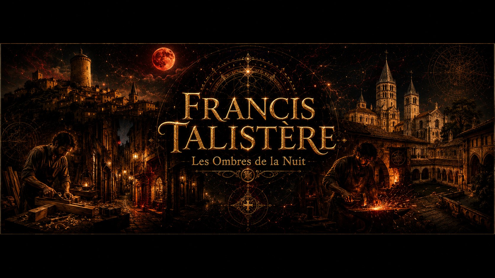
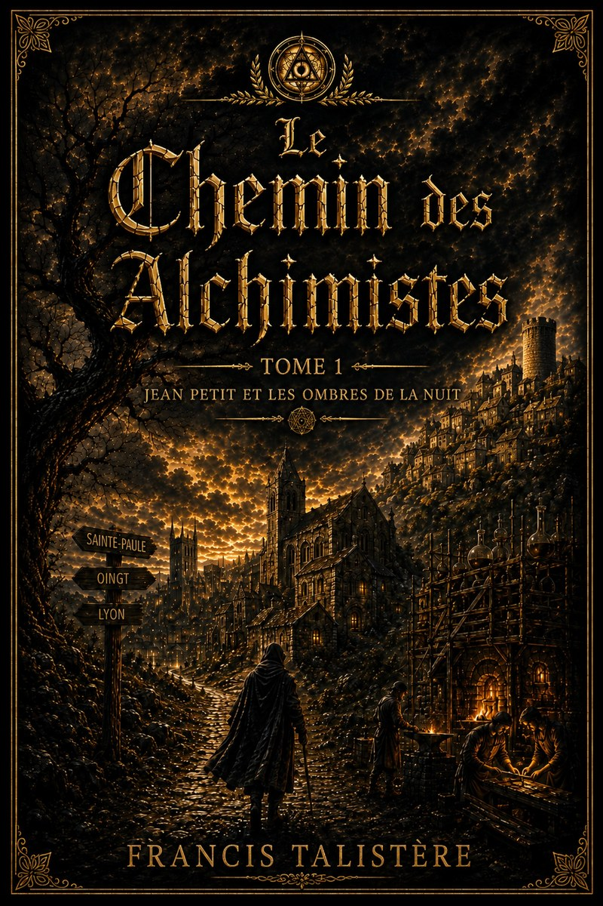

Tome 1 — Jean Petit et les Ombres de la Nuit
Beaujolais, octobre 1312. Sous la menace de l'Inquisition, un enfant de douze ans grandit entre le silence d'un père ancien Templier et le savoir interdit d'une mère guérisseuse. La première marche d'un chemin initiatique en sept tomes.
© Les Éditions Talistère · Univers musical de l'auteur : FrancislArtIste